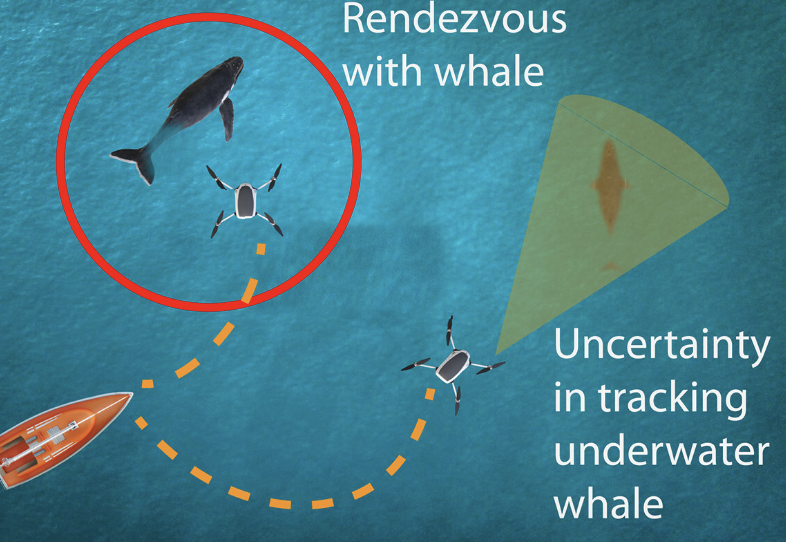

Project AVATARS: Reinforcement learning-based framework for whale rendezvous via autonomous sensing robots

Rendezvous with sperm whales for biological observations is made challenging by their prolonged dive patterns. Here, we propose an algorithmic framework that codevelops multiagent reinforcement learning–based routing (autonomy module) and synthetic aperture radar–based very high frequency (VHF) signal–based bearing estimation (sensing module) for maximizing rendezvous opportunities of autonomous robots with sperm whales. The sensing module is compatible with low-energy VHF tags commonly used for tracking wildlife. The autonomy module leverages in situ noisy bearing measurements of whale vocalizations, VHF tags, and whale dive behaviors to enable time-critical rendezvous of a robot team with multiple whales in simulation. We conducted experiments at sea in the native habitat of sperm whales using an “engineered whale”—a speedboat equipped with a VHF-emitting tag, emulating five distinct whale tracks, with different whale motions. The sensing module shows a median bearing error of 10.55° to the tag. Using bearing measurements to the engineered whale from an acoustic sensor and our sensing module, our autonomy module gives an aggregate rendezvous success rate of 81.31% for a 500-meter rendezvous distance using three robots in postprocessing. A second class of fielded experiments that used acoustic-only bearing measurements to three untagged sperm whales showed an aggregate rendezvous success rate of 68.68% for a 1000-meter rendezvous distance using two robots in postprocessing. We further validated these algorithms with several ablation studies using a sperm whale visual encounter dataset collected by marine biologists.
Citation
- Reinforcement learning-based framework for whale rendezvous via autonomous sensing robots, Nishant Mehrotra, Divyanshu Pandey, Ashutosh Sabharwal, Akarsh Prabhakara, Yawen Liu and Swarun Kumar, Science Robotics 2024 PAPER